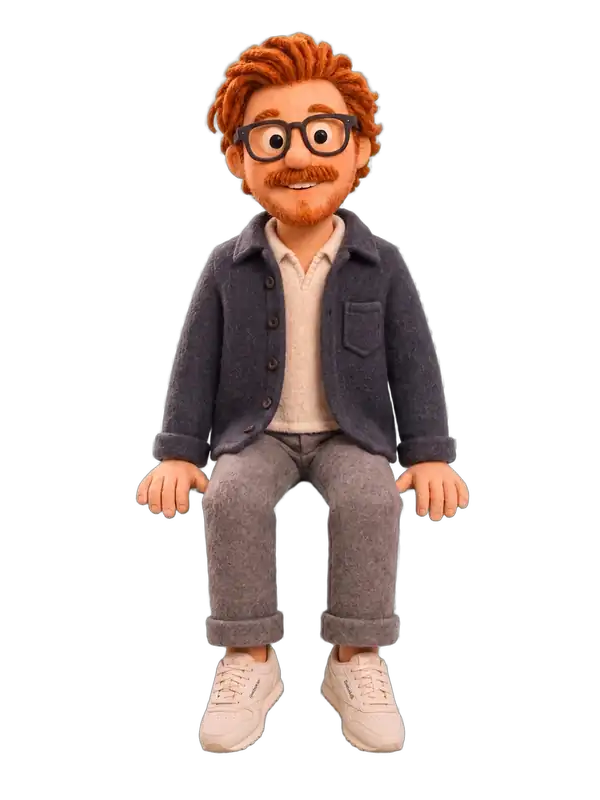
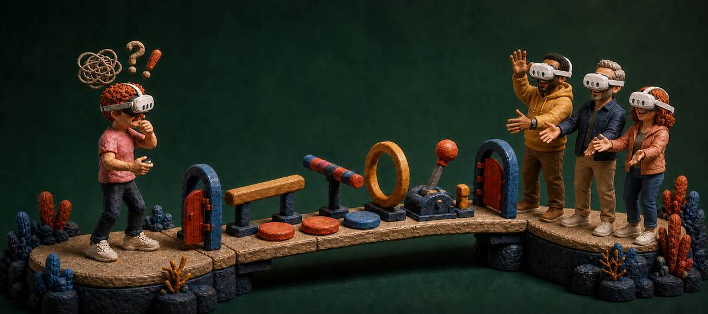
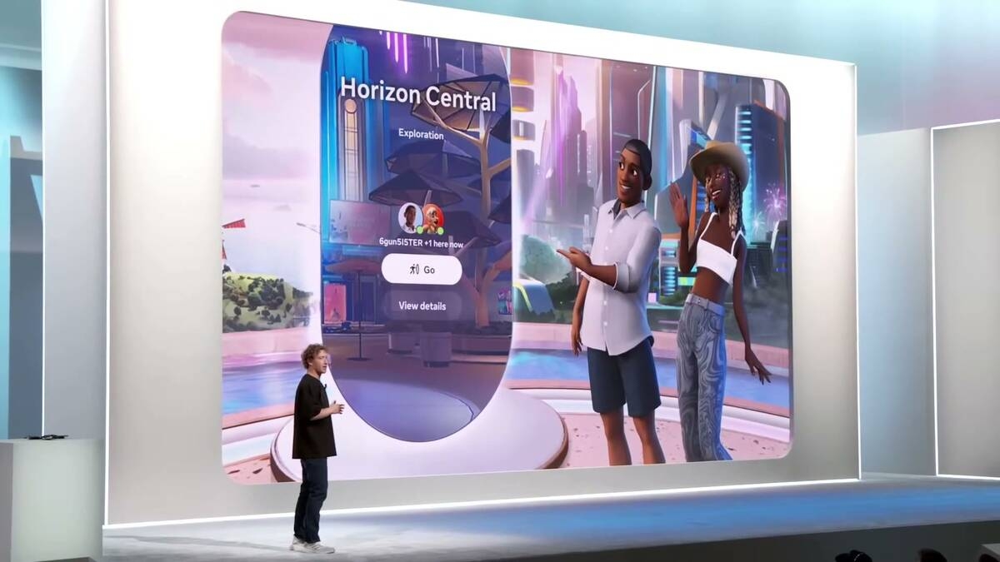

Senior content designer
Hi, I'm Caleb.
I'm a senior content designer with a knack for language systems and agentic workflows. I build measurable voice standards, terminology schemas, and checks that hold both writers and AI agents to a target instead of an adjective.
Richmond, Virginia · Local + remote



02
Selected work


Verso Instruments
MODEL CI-2024
VERSO
Content Intelligence
AGENT
ENGINE
INDEX
Verso
Voice was written in adjectives. I turned it into a target an agent could be held to.
View case study →
Verso Instruments
MODEL CI-2024
VERSO
Content Intelligence
AGENT
ENGINE
INDEX
Verso
Voice was written in adjectives. I turned it into a target an agent could be held to.
View case study →